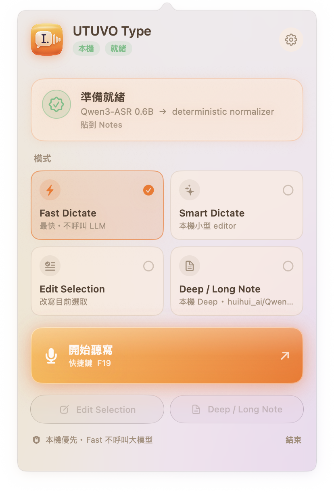
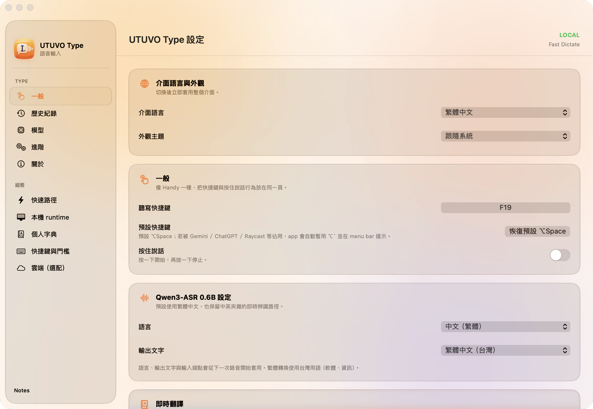
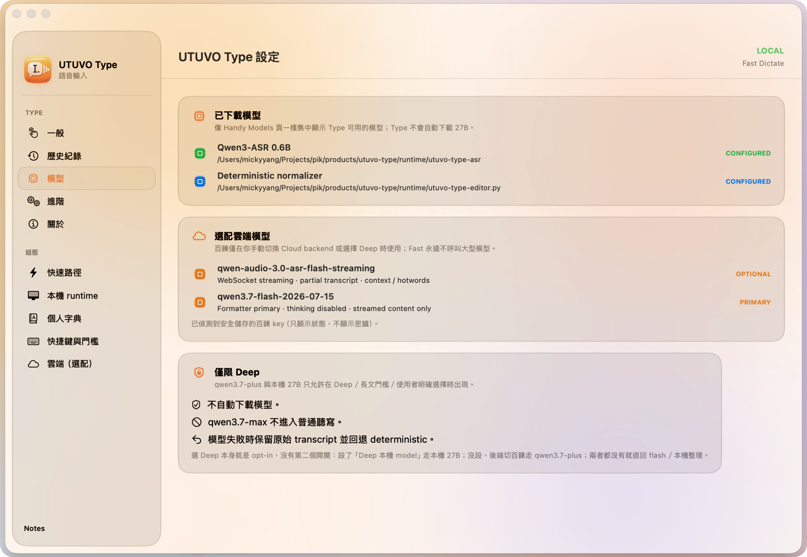
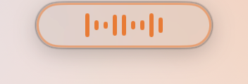
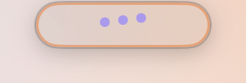
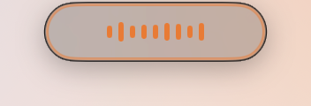
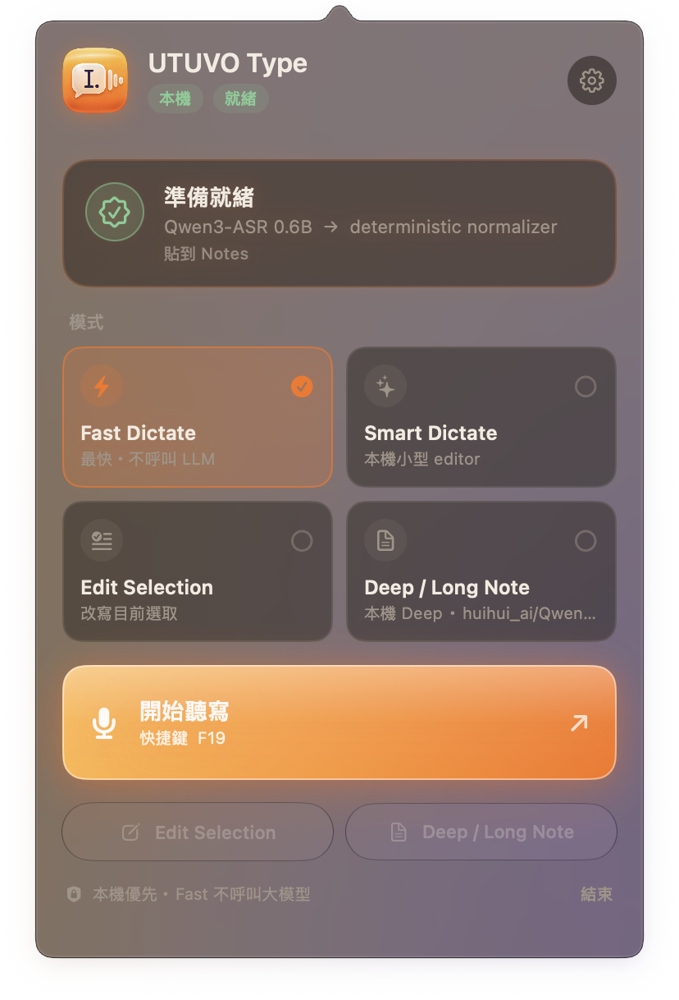

A menu bar app that turns your voice into clean, paste-ready text. Transcription runs on your Mac. Cleanup is deterministic first, model second. Nothing leaves the machine unless you say so.
Free · Open source · MIT · No account, no API key required

Fast never calls a large model. The others only do what you ask, and fall back to the deterministic path if a model fails.
Transcribe and normalize on-device. Instant, predictable, no LLM.
A small local editor tidies sentences. Still on your Mac.
Select text, say what to change. The rewrite replaces the selection.
Long-form notes with a larger model — local 27B or cloud, only when you choose it.
Most of the polish is rules, not guesses. The same input gives the same output, every time.

The default install is fully local: Qwen3-ASR 0.6B running through MLX on Apple silicon. No account, no telemetry, no network after setup.

Swift, AppKit and SwiftUI. Built against the macOS 26 design language with a Liquid Glass popover, floating sidebar and a tiny overlay capsule — and a plain material fallback on macOS 14 and 15.




Or grab the signed, notarized build from Releases. Building from source takes about a minute plus a one-time 1.2 GB model download.
git clone https://github.com/mickyyang-1407/utuvo-type.git && cd utuvo-type ./scripts/bootstrap-runtime.sh # Python venv + Qwen3-ASR model, one time ./scripts/build-app.sh # dist/UTUVO Type.app
The DMG is small: the speech model is not inside it. Settings → General → Install Local Engine downloads Qwen3-ASR 0.6B (about 1.2 GB, once) into your Application Support folder. Nothing is downloaded until you click.